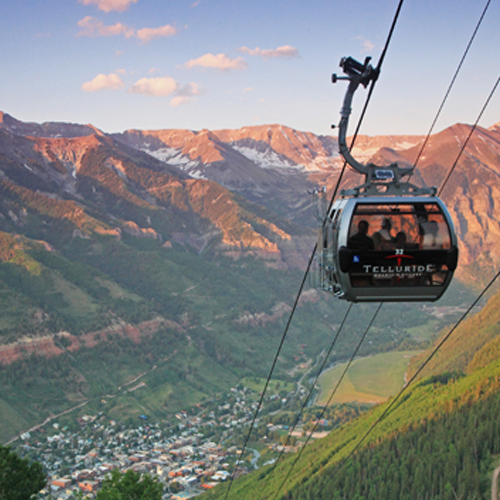

Welcome
Thank you so much for visiting our wedding website!
We are so excited to celebrate our special day with our family and
friends. This website contains wedding day details, travel
information, and much more. It will be routinely updated,
so check back for updates!
A Special Note for Guests:
Please take a look at the Travel & Accommodations sections of our
website to find useful information about transportation and hotels.
These sections will continue to be updated in April, so please check
for the latest information, hotel room blocks, and recommendations!
A Little About Us
Tyler and Jennifer are both from McKinney, Texas. The attended Valley
Creek Elementary School together, and were even in some of the same classes!
They then attended Faubion Middle School together, followed by McKinney
High School.
It wasn't until senior year of high school that they began hanging out
socially, and soon began dating.
After attending separate colleges (Tyler at UT and Jennifer at Tulane),
they spent a few years apart pursuing their education and beginning careers.
By 2012, they found themselves back in Dallas, and opted to give it another
shot! Tyler and Jenn are currently living in Uptown Dallas with their dog, Mya.
The Proposal
While on an absolutely unbelievable summer vacation in 2015, Tyler finally
popped the question. It was the second day of a two week trip, and was the
perfect time. Tyler and Jenn had just arrived in Monument Valley, UT,
and were spending some time driving around and checking out the sights.
Tyler setup his camera to take a few sunset photos, and Jennifer snapped a
few photos for Facebook. Moments later, Tyler was down on one knee, and
Jennifer was beyond surprised! The wonderful day was followed by two weeks
of exploring several beautiful sites and national parks, and what was
simply the best trip yet.
The Big Day!
With their love for travel and the outdoors, Tyler and Jennifer
thought it only fitting to have a beautiful Colorado wedding. They will
be joined by family and friends atop a mountain in Telluride, CO and
surrounded by amazing views, for what will hopefully be the most
beautiful and fun celebration.

New Orleans, 2014

Antelope Canyon, AZ (2015)

Proposal in Monument Valley, UT (2015)

Cheering on the best university in the world

Antelope Canyon, AZ (2015)

Destin, 2015

Jennifer always beats Tyler

Las Vegas 2015

Mono Lake, CA (2015

Snowboarding champs in Aspen, CO (2013)

Ringing in the holidays, 2013

Tyler showing Jenn the ropes in Austin
Our Wedding
The ceremony and reception will be taking place the evening of August 28th,
in Telluride. We hope you are able to join us for a fun-filled evening of
celebration!!
Event times will be updated in April, so check back for more details.
Please see below for details on the beautiful venues!
Event attire is semi-formal. The ceremony will take place outdoors, so
please check the weather prior to packing! Late August usually yields highs
in the low 70s and lows around 40 overnight. So will be a nice break
from the hot Texas summer!
Cocktail hour will follow the ceremony, on the deck at Gorrono Ranch. The
reception will then be inside Gorrono, with access to the deck throughout
the evening.
Please see details and pictures below!
Welcome Party
August 27, 2016
9:30 pm to 12:00 am
LOCATION TBD
Following the rehearsal dinner on Saturday evening, we'd love to get
together with everyone who as traveled to Telluride and do some early
celebrating! Please stay tuned for details, and
check back this spring for the location!
Ceremony


August 28, 2016
5:00 pm to 5:30 pm
The free gondola departs from both Telluride and Mountain Village,
and is a 5-7 minute ride to San Sophia. Upon reaching the San Sophia
Station, it is about a 5 minute walk to the ceremony site.
Please plan to board the gondola by 4:30pm, and arrive at the ceremony
site by 4:45pm, to help ensure a prompt ceremony start time.
Reception
August 28, 2016
6:00 pm to 10:30 pm
Following the reception, transportation will be provided for all guests
to Gorrono Ranch. Gorrono is about a five minute drive from the ceremony
site. Cocktail hour will begin at 6:00pm, followed by dinner, drinks,
and plenty of dancing!
Flying to Telluride
For those of you who are traveling from out-of-town, we are so grateful
that you are making the trip to Telluride for our wedding celebration.
Please find some helpful information about flights below, and use the
tool to search for available flights. Additionally, searching through
engines like Expedia.com are also great options. Please reach out to
Jennifer and Tyler with any questions regarding travel!
If you want to fly to Telluride, you have several options, with three
regional airports within a 2 ½ hour driving distance providing numerous
flight options. Choose to fly into either the Montrose/Telluride Airport
(MTJ), Grand Junction Regional Airport (GJT), or the Durango-La Plata
Airport (DRO) for convenient flights that fit your schedule. Some
nonstop flights are offered each day, as well as several connecting options.
Flying into Montrose/Telluride Airport (MTJ)
The Montrose-Telluride Airport is located approximately 65 miles from
Telluride, offering year-round direct flights from Denver International
Airport (DEN). During the summer season, you can fly direct to
Montrose/Telluride from Denver International Airport (DEN), Dallas-Fort
Worth International Airport (DFW) and Phoenix Sky Harbor International
Airport (PHX).
Flying into Grand Junction (GJT)
The Grand Junction Regional Airport offers non-stop flights from six
cities and hundreds of connecting destinations. Non-stop flights are
available from Denver International Airport (DEN), Dallas/Fort Worth
International Airport (DFW), Phoenix Sky Harbor International Airport (PHX),
Salt Lake City (SLC), Las Vegas (LAS), Los Angeles (LAX) and Houston (IAH).
Once you arrive in your desired airport destination, there are plenty of
Ground Transportation options to take advantage of. Additionally, if
you prefer to rent a car, Durango and Grand Junction airports are each
approximately a 2.5 hour drive, while Montrose is about an hour and a
half away.
Flying into Durango-La Plata Airport (DRO)
The Durango-La Plata Airport is a full-service regional airport with over
a dozen daily non-stop flights from Denver International Airport (DEN),
Dallas/Fort Worth International Airport (DFW) and Phoenix Sky Harbor
International Airport (PHX), as well as convenient connecting flights
from over 300 cities. The Durango-La Plata Airport offers year-round
service from the following airlines:
-
American Airlines – Daily direct service from Dallas-Fort Worth (DFW)
and Phoenix Sky Harbor (PHX)
-
United Airlines – Daily direct service from Denver International
Airport (DEN)
Transportation from Airports
The three main regional airports, Montrose-Telluride Airport (MTJ),
Grand Junction Regional Airport (GJT) and Durango-La Plata County Airport
(DRO) offer a variety of rental car and airport transfer shuttle
services to Telluride and Mountain Village.
Information regarding recommended transportation to and from the airport
will be added here shortly, so please check back for updates!
Please check here for additional options, and rental cars through Avis,
Hertz, Budget, and National: http://www.tellurideskiresort.com/trip-planning/getting-here/ground-transportation/
Accomodations
This page will be updated in April with information regarding reserved
room blocks and recommended hotels. Please check back at that time to find
out more about accommodations, and special discounted rates.
For now, a few hotel options have been included below.
Getting Around Telluride
Telluride is one of the most pedestrian-friendly cities in the United States.
Once you get here, you won’t need to rent a car thanks to services such as
the free Gondola, Dial-a-Ride/Telluride Concierge and Galloping Goose bus
service.
Free Gondola
Linking two towns, the Gondola is the only public transportation system of
its kind in North America. Running daily from 7am to midnight, the
13-minute gondola ride eliminates the 20-minute, 8-mile drive between
both towns. The midway point of the gondola is San Sophia Station,
where the ceremony will take place. The gondola operates year-round, with
temporary off-season closures
Learn More
Galloping Goose
The Galloping Goose bus service provides free transportation in and around
the town of Telluride, Mountain Village and Lawson Hill. It also provides
paid bus transportation to Norwood and Placerville.
For more information about the Galloping Goose:
Call: (970) 728-5700
Dial-a-Ride/Telluride Concierge
Dial-a-Ride/Telluride Concierge offers free, door-to-door transportation
for guests and residents in and around Mountain Village. For more
information about Dial-A-Ride:
Call: (970) 728-8888
Things To Do
Telluride and Mountain Village offer tons of great activities year round,
and the summertime is no exception.
We hope everyone is able to enjoy their time in Telluride, and visit some of
the surrounding scenery and parks. Please continue to check back in for more
information and recommendations.
Telluride Ski Resort encompasses Mountain Village, a bustling town originally
developed as a cozy retreat from the slopes. Nestled high in the San Juan
Mountains — roughly 9,500 feet above sea level — Mountain Village has a
quaint yet vibrant atmosphere with shops and restaurants lining cobblestone
streets.
Aside from exploring Mountain Village and Telluride, some great outdoor
activities include:
- Hiking and Backpacking
- Fly fishing
- Horseback riding
- Mountain biking
- Jeep or 4x4 tours
- Golfing at the 18-Hole Telluride Golf Course
- Kayaking on the San Miguel River
- Canoeing and paddle boarding
- River rafting and tubing
- Mesa Verde National Park
- Black Canyon National Park
And for all you first timers to Telluride, check out some helpful
information through Telluride Ski Resort:
First Timer's Guide »
Summer Activities »

Bridal Veil Falls
As the longest natural free-falling waterfall in Colorado, Bridal Veil Falls
is a must-see for hikers in the area. The falls cascade 365 feet and views
from the top stretch out across Telluride and the neighboring village of
Pandora. The entire hike is on a dirt and gravel roadway (so wear some sturdy
shoes), about 2 miles (one-way) and gains 1,200 feet in elevation.
The top of the falls is also home to the Smuggler-Union Hydroelectric Power
Plant, originally built in 1907 to supply the neighboring mine. It was fully
restored in the 1990s and today provides about 25 percent of Telluride's
electric power.
The trail leading up the massive waterfall is suitable for hikers and bikers
as well as four-wheel drive vehicles. Once at the top of the falls, the trail
narrows and vehicles are no longer permitted but the trail offers a
spectacular aerial view of the town below. Past hikers say the elevation
change is barely noticeable, but the climb to the top of the falls can
be a little slick.
To reach the falls, head east of town on Colorado Avenue for about 3 miles
then follow the dirt road marked County Road. If you want to make the hike
on foot, park at the Valley View Area parking lot and follow the switchbacks
up the 1.2 miles to the bottom of the falls.
Bear Creek Trail
Bear Creek Trail is a must-do for those who visit Telluride in summer.
Starting at the end of South Pine Street, this trail leads 2½ miles (one-way)
through the Bear Creek Preserve to Bear Creek Falls. Several other trails
branch off from the falls, leading more adventurous hikers farther into
the preserve.
The view of Bear Creek Falls is well worth the trek up 1,050 feet in
elevation. The trail welcomes hikers and bikers every day from sun up to
sundown. You do not have to pay for trail access.
Day Trip to Ouray, CO
The historic city of Ouray is located just a short hour's drive (50 miles)
from Telluride. Ouray claims itself as the "Little Switzerland of America"
and is set in a box canyon similar to Telluride's. Visitors will enjoy the
thermal activity at the local Ouray Hot Springs swimming pool (open all year)
and Vapor Caves. Ouray Hot Springs are just 1 hour drive from Telluride.
There are 3 pools: hot, warm and cool.
In Ouray, you can also take a beautiful, historic drive or four-wheel over
to Telluride along Yankee Boy Basin and the Imogene Pass. True Grit was
filmed in this area in 1968 and included scenes in the city of Ouray and
most notably, the interior of the Ouray County Court House. Visiting Ouray
can offer the perfect day trip from Telluride.

Town Park
During the warmer months, visitors and residents head to Town Park on the
southeast edge of town to enjoy scenic walking paths and picturesque picnic
spots. Its 36 acres are also home to an outdoor swimming pool, basketball
and tennis courts, a fishing pond, multiple playgrounds and even a Frisbee
golf course. Plus, the park provides campgrounds, and plays host to many of
Telluride's festivals and events, including the Telluride Bluegrass Festival.
Learn More

Mesa Verde National Park
Mesa Verde National Park, located between Durango, Cortez and only 2.5 hours
from Telluride, is rich in history with spectacular views stretching over
one hundred miles. The National Park was established to preserve
archaeological sites built by the Ancestral Puebloans dating back to
550 A.D. With a spectacular look into the lives of the Puebloans, these
inhabitants lived in the Four Corners region of Colorado for over 700 years.
Spend hours looking at more than 4,700 archaeological sites including
600 cliff dwellings, pueblos, masonry towers, farming structures,
and much more. Take time to look back into the past at one of the best
preserved and most notable National Parks of its kind in the United States.
But that's not all... Mesa Verde National Park has numerous hiking trails,
beautiful camping grounds, heritage foods and cuisine, Native American
handcrafts and shopping, and more.
Learn More

Black Canyon of the Gunnison National Park
The Black Canyon of the Gunnison's unique and spectacular landscape was
formed slowly by the action of water and rock scouring down through hard
Proterozoic crystalline rock. No other canyon in North America combines the
narrow opening, sheer walls, and startling depths offered by the Black Canyon
of the Gunnison.
Carved by the Gunnison River two million years ago, this 12-mile long canyon
is one of Colorado's most spectacular. The 2,300-foot Painted Wall is the
state's highest cliff. Great for white water rafting and fishing, and known
for supreme hiking terrain. Located 13 miles outside of Montrose, the Black
Canyon Park is about two hours from Telluride.
Learn More

Moab, Utah
Moab, Utah is located 134 miles from Telluride and is one of the best day
trips in the region. As you leave Telluride's 13,000 foot peaks, in just
under 3 hours you end up in the desert town of Moab. The drive takes you
through a beautiful canyon and Paradox Valley where climbers flock from all
over to experience this superb rock. Moab hosts many visitors each year,
mostly to visit the Arches and Canyonlands National Parks. Mountain biking,
camping, 4-wheeling, and much more adventures await you in this awesome town.